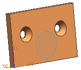
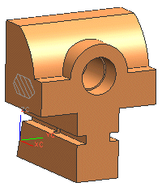

PMI 区域
使用 PMI 区域  命令来出于特殊目的而创建对象，该对象为您指派模型中的区域，比如受基准目标影响的区域，或不被其它 PMI 注释引用的独立区域。
命令来出于特殊目的而创建对象，该对象为您指派模型中的区域，比如受基准目标影响的区域，或不被其它 PMI 注释引用的独立区域。
PMI 区域的类型
|
|
矩形 |
|
 |
圆形 |
|
|
环形 – 指定一个中心带孔的圆形作为区域 |
|
|
圆柱形 – 指定被圆柱面包围的区域 |
|
 |
任意 – 使用选定的封闭曲线组或选定面来指定区域。这是仅有的一种在一个主区域中创建多个子区域的 PMI 区域类型。 |


用作基准目标的 PMI 区域
PMI 区域通常用于显示受基准目标影响的区域。当您在创建基准目标时选择 PMI 区域，区域的尺寸的决定目标的大小。
在下图中，PMI 区域，亦即基准目标，为0.9英寸直径大小的圆。

位于何处？
|
工具条 |
PMI→补充几何体下拉菜单→PMI 区域 |
|
菜单 |
创建： 产品制造信息→补充几何体→区域 编辑： 编辑→注释→注释对象 |
|
快捷菜单 |
右击 PMI 区域→编辑 |